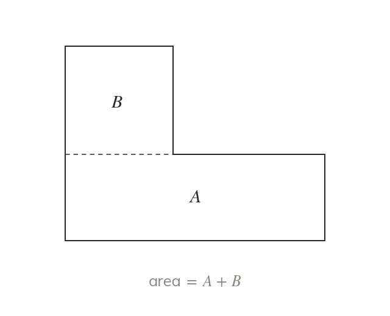

Splitting into pieces
Split a compound shape into rectangles and triangles, then add the areas. Find any missing length from the lengths given.
A compound shape's area is found by splitting it into rectangles and triangles and adding their areas. Any missing length comes from the lengths already given.